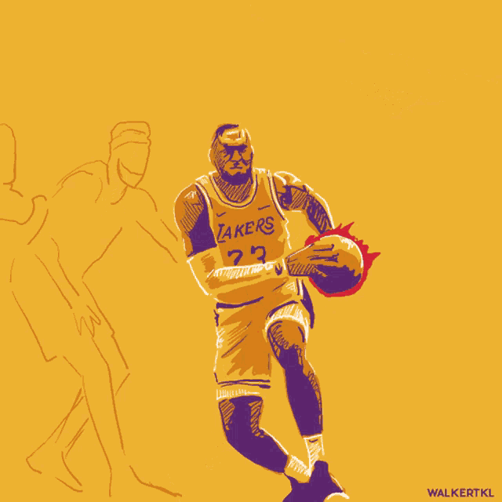
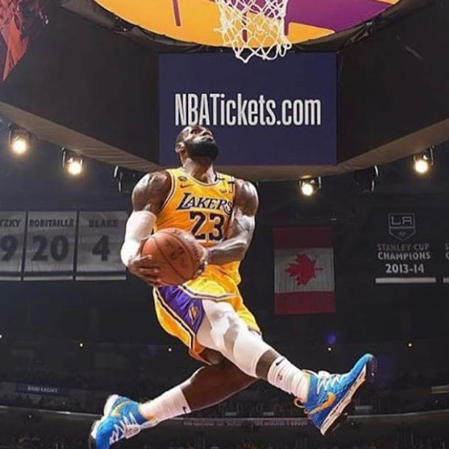
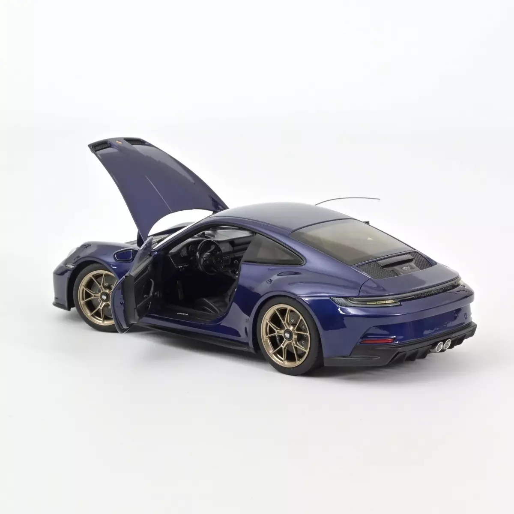

Igor Balić
Općenito o meni:
Pozdrav! Moje ime je Igor Balić i student sam
FERIT-a.
Trenutno sam na trećoj godini preddiplomskog stručnog studija računarstva.
Rođen sam 02.07.1999. godine u Vinkovcima.
Završio sam Tehničku školu Nikole Tesle u Vukovaru i stekao zvanje tehničar za računalstvo.
Nakon svog srednjoškolskog obrazovanja upisujem
Odjel za fiziku u Osijeku gdje sam studirao 2 semestra.
Kontakt informacije:
E-mail: igor.balic.27@gmail.com, ibalic@etfos.hr


GitHub i GitLab
Iskustvo:
Stručna praksa "Frontend programiranje" web stranica u "Informatika Fortuno".
Rad na inventurama u trgovinama za firmu "Dantem".
Dvije sezone sam radio na moru u restoranu kao kuhar.
Telefonsko anketiranje za tvrtku "IPSOS".
Sezonski posao u proizvodnji smrznutog voća i povrća.
Hobiji:
Glazba mi je jedan o većih hobija, u slobodno vrijeme sviram gitaru. Također sport isto, nekoliko puta tjedno se bavim calisthenicsom i igram basket kada se ekipa okupi. Ljubitelj sam filmova, serija i video igrica. Volim tehnologiju i znanost općenito.
Vještine:
Smatram se komunikativnom osobom i timskim igračem. Brzo usvajam nove vještine. Dobro znanje engleskog jezika u pismu, čitanju i razgovoru. Imam iskustva u radu s frontend i backend razvojem web stranica u Angular frameworku, također i NodeJs za backend i baze podatak s MySQL. Općenito poznavanje C, JavaScript, TypeScript, PHP i Java programskog jezika. Machine learning i Deep learning uz pomoć Python programskog jezika i Keras biblioteke.
Galerija
JPG

GIF
BMP
WEBP
